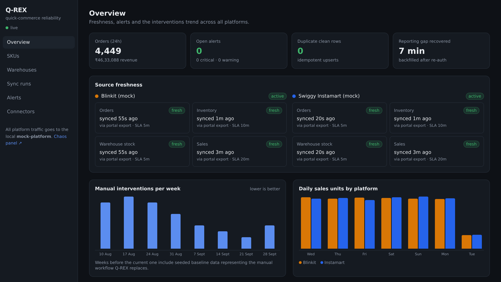

Q-REX
Quick-commerce data that keeps working when sessions expire, OTPs arrive and formats change.
Brands can’t reliably see their own orders, stock and sales.
Seller APIs are thin, so teams rely on browser bots that break on:
- Session expiry
- OTP prompts
- Silent format changes
Scrape with a copied token.
Internal endpoints are undocumented and change without notice, tokens expire, and bot traffic can get a seller’s account flagged. It is the fragile workflow Palm Era wants gone.
Compliant by construction.
Official API
First choice wherever a platform offers one.
Portal export
The seller’s own reports, with logged consent.
Report email
Scheduled reports, parsed. No session to keep alive.
Manual upload
The last resort, through the same checks.
Bad data never reaches the dashboard.
Authenticate
Encrypted sessions, expiry probe
Retrieve
Walks the source ladder
Validate
Drift, partial and contract checks
Transform
One SKU across platforms
Store
Raw → staging → clean, idempotent
Monitor
Freshness SLA, stock, alerts
Dashboard
Live updates over SSE
A failed check quarantines the pull. The clean layer is never touched.
We break it live. It recovers.
Verified from a cold start.
One tap, one code, back in sync.
- Expiry caught before the next sync
- Seller gets a one-tap re-auth link
- They type the OTP from their phone
- Q-REX resumes and backfills the gap
Weeks 1–7 are a seeded baseline standing in for the manual workflow; “Now” is the live demo’s single re-auth.
Every platform, one honest dashboard.
- Freshness per source and dataset
- One SKU across both platforms
- Stock alerts per dark store
- Stale data is marked, never hidden

Live screenshot · Q-REX overview running in Docker Compose
Pull data only through permitted paths. Handle the OTP, don’t defeat it. Survive every failure, live.
Dashboard :3000 · Chaos :9000 · Alerts :8025